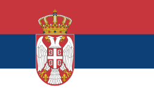
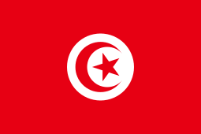

Seleções e jogadores convocados
1.Alemanha

Goleiros:
Neuer, Ter Stegen, Trapp
Defensores:
Bella-Kotchap, Ginter, Günter, Kehrer, Klostermann, Raum, Rüdiger, Schlotterbeck, Süle
Meio-campistas:
Gündogan, Goretzka, Götze, Kimmich, Hofmann, Brandt e Füllkrug
Atacantes
Sané, Müller, Havertz, Gnabry, Youssoufa Moukoko e Musiala
2.Arábia Saudita

Goleiros:
Mohamed Al-Owais, Nawaf Al-Aqidi, Mohamed Al-Yami
Defensores:
Yasser Al-Shahrani, Ali Al-Bulaihi, Abdulelah Al-Amri, Abdullah Madu, Hassan Tambakti, Sultan Al-Ghanam, Mohammed Al-Breik, Saud Abdulhamid
Meio-campistas:
Salman Al-Faraj, Riyadh Sharahili, Ali Al-Hassan, Mohamed Kanno, Abdulelah Al-Malki, Sami Al-Najei, Abdullah Otayf, Nasser Al-Dawsari, Abdulrahman Al-Aboud, Salem Al-Dawsari, Hattan Bahebri
Atacantes
Fahad Al-Muwallad, Haitham Asiri, Saleh Al-Shehri, Firas Al-Buraikan
3.Argentina

Goleiros:
Emiliano Martínez, Franco Armani, Gerónimo Rulli
Defensores:
Nahuel Molina, Gonzalo Montiel, Cristian Romero, Germán Pezzella, Nicolás Otamendi, Lisandro Martínez, Marcos Acuña, Nicolás Tagliafico, Juan Foyth
Meio-campistas:
Rodrigo De Paul, Leandro Paredes, Alexis Mac Allister, Guido Rodríguez, Alejandro Gómez, Enzo Fernández, Exequiel Palacios
Atacantes
Lionel Messi, Lautaro Martínez, Ángel Di María, Julián Álvarez, Paulo Dybala, Nicolás González, Joaquín Correa
4.Austrália

Goleiros:
Mat Ryan, Andrew Redmayne, Danny Vukovic
Defensores:
Aziz Behich, Milos Degenek, Bailey Wright, Harry Souttar, Fran Karacic, Nathaniel Atkinson, Joel King, Kye Rowles, Thomas Deng
Meio-campistas:
Aaron Mooy, Jackson Irvine, Ajdin Hrustic, Riley McGree, Cameron Devlin, Keanu Baccus
Atacantes
Mathew Leckie, Awer Mabil, Jamie Maclaren, Mitchell Duke, Martin Boyle, Craig Goodwin, Garang Kuol, Jason Cummings
5.Bélgica

Goleiros:
Koen Casteels, Thibaut Courtois, Simon Mignolet
Defensores:
Toby Alderweireld, Zeno Debast, Wout Faes, Arthur Theate, Vertonghen, Timothy Castagne, Meunier
Meio-campistas:
Yannick Carrasco, Thorgan Hazard, Kevin De Bruyne, Leander Dendoncker, Amadou Onana, Youri Tielemans, Axel Witsel, Hans Vanaken, De Ketelaere, Jérémy Doku, Eden Hazard
Atacantes
Leandro Trossard, Dries Mertens, Lois Openda, Michy Batshuayi, Romelu Lukaku
6.Brasil

Goleiros:
Alisson, Ederson, Weverton
Defensores:
Danilo, Alex Sandro, Daniel Alves, Alex Telles, Militão, Marquinhos, Thiago Silva, Bremer
Meio-campistas:
Bruno Guimarães, Casemiro, Fabinho, Fred, Paquetá, Everton Ribeiro
Atacantes
Neymar, Vinicius Júnior, Antony, Rodrygo, Raphinha, Richarlison, Pedro, Gabriel Jesus, Gabriel Martinelli
7.Camarões

Goleiros:
Onana, Epassy, Ngapandouetnbu
Defensores:
Nkoulou, Ebosse, Tolo, Mbaizo, Fai, Castelletto, Wooh, Onguene
Meio-campistas:
Ondoa, Gouet, Kund, Hongla, Anguissa, Ntcham
Atacantes
Nkoudou, Aboubakar, Mbeumo, Nsame, Toko Ekambi, Ngamaleu, Choupo-Moting,, Bassogog, Marou
8.Canadá
Goleiros:
James Pantemis, Milan Borjan, Dayne St. Clair
Defensores:
Samuel Adekugbe, Joel Waterman, Alistair Johnson, Richie Laryea, Kamal Miller, Steven Vitória, Derek Cornelius
Meio-campistas:
Liam Fraser, Ismael Koné, Mark-Anthony Kaye, David Wotherspoon, Jonathan Osorio, Atiba Hutchinson, Stephen Eustáquio, Samuel Piette
Atacantes
Tajon Buchanan, Liam Millar, Lucas Cavallini, Iké Ugbo, Junior Hoilett, Jonathan David, Cyle Larin, Alphonso Davies
9.Coreia do Sul

Goleiros:
Kim Seung-gyu, Jo Hyeon-woo, Song Bum-keun
Defensores:
Kim Min-jae, Kim Jin-su, Hong Chul, Kim Moon-hwan, Yoon Jong-gyu, Kim Young-gwon, Kim Tae-hwan, Kwon Kyung-won, Cho Yu-min
Meio-campistas:
Jung Woo-young, Na Sang-ho, Paik Seung-ho, Son Jun-ho, Song Min-kyu, Kwon Chang-hoon, Lee Jae-sung, Hwang Hee-chan, Hwang In-beom, Jeong Woo-yeong, Lee Kang-in
Atacantes
Hwang Ui-jo, Cho Gue-sung, Son Heung-min
10.Costa Rica

Goleiros:
Keylor Navas, Esteban Alvarado, Patrick Sequeira
Defensores:
Francisco Calvo, Juan Pablo Vargas, Kendall Waston, Óscar Duarte, Keysher Fuller, Carlos Martínez, Bryan Oviedo, Ronald Matarrita
Meio-campistas:
Yeltsin Tejeda, Celso Borges, Youstin Salas, Roan Wilson, Gerson Torres, Douglas López, Jewison Bennette, Álvaro Zamora, Anthony Hernández, Brandon Aguilera, Bryan Ruiz
Atacantes
Joel Campbell, Anthony Contreras, Johan Venegas
11.Croácia

Goleiros:
Livakovic, Ivusic, Grbic
Defensores:
Vida, Lovren, Barisic, Juranovic, Gvardiol, Sosa, Stanisic, Erlic, Sutalo
Meio-campistas:
Modric, Kovacic, Brozovic, Pasalic, Vlasic, Majer, Jakic, Sucic
Atacantes
Perisic, Kramaric, Bruno Petkovic, Orsic, Budimir, Livaja
12.Dinamarca
Goleiros:
Kasper Schmeichel, Oliver Christensen, Frederik Ronnow
Defensores:
Simon Kjaer, Andreas Christensen, Joachim Andersen, Victor Nelson, Joakim Maehle, Jens Stryger Larsen, Rasmus Nissen Kristensen, Daniel Wass, Alexander Bah
Meio-campistas:
Christian Eriksen, Pierre-Emile Højbjerg, Thomas Delaney, Mathias Jensen, Robert Skov, Christian Norgaard
Atacantes
Andreas Skov Olsen, Martin Braithwaite, Jesper Lindstrom, Mikkel Damsgaard, Andreas Cornelius, Kasper Dolberg, Jonas Wind, Yousuf Poulsen
13.Equador

Goleiros:
Alexander Domínguez, Hernán Galíndez, Moisés Ramírez
Defensores:
Piero Hincapié, Félix Torres, Robert Arboleda, Xavier Arreaga, Jackson Porozo, Angelo Preciado, Pervis Estupiñán, William Pacho, Diego Palacios
Meio-campistas:
Moisés Caicedo, Carlos Gruezo, Jhegson Méndez, Alan Franco, José Cifuentes, Ángel Mena, Gonzalo Plata, Jeremy Sarmiento, Romario Ibarra, Ayrton Preciado
Atacantes
Énner Valencia, Michael Estrada, Djorkaeff Reasco, Kevin Rodríguez
14.Espanha
Goleiros:
Unai Simón, Robert Sánchez, David Raya
Defensores:
Dani Carvajal, César Azpilicueta, Eric Garcia, Hugo Guillamón, Aymeric Laporte, Pau Torres, Jordi Alba, Gayà
Meio-campistas:
Sergio Busquets, Rodrigo, Pedri, Gavi, Koke, Marcos Llorente, Carlos Soler
Atacantes
Alvaro Morata, Ferrán Torres, Dani Olmo, Nico Williams, Pablo Sarabia, Marco Asensio, Yeremy Pino, Ansu Fati
15.Estados Unidos

Goleiros:
Horvarth, Johnson, Turner
Defensores:
Carter-Vickers, Dest, Long, Moore, Ream, Robinson, Scally, Yedlin, Zimmerman
Meio-campistas:
Aaronson, Acosta, Adams, De la Torre, McKennie, Musah, Roldan
Atacantes
Ferreira, Morris, Pulisic, Reyna, Sargent, Weah, Wright
16.França

Goleiros:
Lloris, Areola, Mandanda
Defensores:
Pavard, Konaté, Koundé, Varane, Disansi, Saliba, Lucas Hernandéz, Theo Hernandez, Upamecano
Meio-campistas:
Camavinga, Rabiot, Tchouaméni, Youssouf Fofana, Guendouzi, Veretout
Atacantes
Coman, Marcus Thuram, Mbappé, Giroud, Griezmann, Dembélé, Kolo Muani
17.Gana

Goleiros:
Ibrahim Danlad, Abdul Manaf Nurudeen, Lawrence Ati-Zigi
Defensores:
Daniel Amartey, Mohammed Salisu, Alexander Djiku, Alidu Seidu, Tariq Lamptey, Abdul Rahman Baba, Gideon Mensah, Denis Odoi, Joseph Aidoo
Meio-campistas:
Salis Abdul Samed, Thomas Teye Partey, Elisha Owusu, Daniel Afriyie Barnieh, Kamal Sowah, Mohammed Kudus, Andre Ayew, Daniel-Kofi Kyereh
Atacantes
Osman Bukari, Jordan Ayew, Inaki Williams, Abdul Fatawu Issahaku, Kamaldeen Sulemana, Antoine Selorm Semenyo
18.Holanda

Goleiros:
Justin Bijlow, Andries Noppert, Remko Pasveer
Defensores:
Virgil van Dijk, Nathan Aké, Daley Blind, Jurrien Timber, Denzel Dumfries, Stefan De Vrij, Matthijs De Ligt, Tyrell Malacia, Jeremie Frimpong
Meio-campistas:
Frenkie De Jong, Steven Berghuis, Davy Klassen, Teun Koopmeiners, Cody Gakpo, Marten De Roon, Kenneth Taylor, Xavi Simons
Atacantes
Memphis Depay, Steven Bergwijn, Vincent Janssen, Luuk De Jong, Noa Lang, Wout Weghorst
19.Inglaterra
Goleiros:
Jordan Pickford, Nick Pope, Aaron Ramsdale
Defensores:
Trent Alexander-Arnold, Conor Coady, Eric Dier, Harry Maguire, Luke Shaw, John Stones, Kieran Trippier, Kyle Walker, Ben White
Meio-campistas:
Jude Bellingham, Conor Gallagher, Jordan Henderson, Mason Mount, Kalvin Phillips, Declan Rice
Atacantes
Phil Foden, Jack Grealish, Harry Kane, James Maddison, Marcus Rashford, Bukayo Saka, Raheem Sterling, Callum Wilson
20.Irã

Goleiros:
Alireza Beiranvand, Amir Abedzadeh, Seyed Hossein Hosseini, Payam Niazmand
Defensores:
Ehsan Hajsafi, Morteza Pouraliganji, Ramin Rezaeian, Milad Mohammadi, Hossein Kanaanizadegan, Shojae Khalilzadeh, Sadegh Moharrami, Rouzbeh Cheshmi, Majid Hosseini, Abolfazl Jalali
Meio-campistas:
Ahmad Noorollahi, Saman Ghoddos, Vahid Amiri, Saeid Ezatolahi, Alireza Jahanbakhsh, Mehdi Torabi, Ali Gholizadeh, Ali Karimi
Atacantes
Karim Ansarifard, Sardar Azmoun, Mehdi Taremi
21.Japão
Goleiros:
Shuichi Gonda, Eiji Kawashima, Daniel Schmidt
Defensores:
Yuto Nagatomo, Maya Yoshida, Takehiro Tomiyasu, Hiroki Sakai, Yuta Nakayama, Shogo Taniguchi, Ko Itakura, Miki Yamane, Hiroki Ito
Meio-campistas:
Wataru Endo, Hidemasa Morita, Ao Tanak, Daichi Kamada, Junya Ito, Kaoru Mitoma, Takumi Minamino, Yuki Soma, Gaku Shibasaki, Takefusa Kubo, Ritsu Doan
Atacantes
Daizen Maeda, Takuma Asano, Ayase Ueda
22.Marrocos

Goleiros:
Yassine Bono, Munir, Tagnaouti
Defensores:
Achraf Hakimi, Noussair Mazraoui, Romain Saiss, Nayef Aguerd, Achraf Dari, Jawad El-Yamiq, Yamia Attiat-Allal, Badr Benoun
Meio-campistas:
Sofyan Amrabat, Selim Amallah, Abdelhamid Sabiri, Azzedine Ounahi, Bilel El Khanouss, Yahya Jabrane
Atacantes
Hakim Ziyech, En-Nesyri, Sofiane Boufal, Aboukhlal, Ez Abdé, Anass Zaroury, Ilias Chair, Abderazak Hamdallah Walid Cheddira
23.México

Goleiros:
Guillermo Ochoa, Rodolfo Cota, Alfredo Talavera
Defensores:
Jorge Sánchez, Kevin Álvarez, Néstor Araujo, Johan Vásquez, Gerardo Arteaga, Héctor Moreno, César Montes, Jesús Gallardo
Meio-campistas:
Andrés Guardado, Héctor Herrera, Carlos Rodríguez, Érick Gutiérrez, Luis Chávez, Édson Álvarez, Luis Romo
Atacantes
Orbelín Pineda, Hirving Lozano, Raúl Jiménez, Uriel Antuna, Henry Martín, Rogelio Funes Mori, Alexis Vega, Roberto Alvarado
24.País de Gales

Goleiros:
Adam Davies, Wayne Hennessey, Danny Ward
Defensores:
Ben Davies, Ben Cabango, Tom Lockyer, Joe Rodon, Chris Mepham, Ethan Ampadu, Chris Gunter, Neco Williams, Connor Roberts
Meio-campistas:
Sorba Thomas, Joe Allen, Matt Smith, Dylan Levitt, Harry Wilson, Joe Morrell, Jonny Williams, Aaron Ramsey, Rubin Colwill
Atacantes
Gareth Bale, Kieffer Moore, Mark Harris, Brennan Johnson, Dan James
25.Polônia

Goleiros:
Wojciech Szczesny, Lukasz Skorupski, Kamil Grabara
Defensores:
Jan Bednarek, Bartosz Bereszynski, Matty Cash, Kamil Glik, Robert Gumny, Artur Jedrzejczyk, Jakub Kiwior, Mateusz Wieteska, Nicola Zalewski
Meio-campistas:
Krystian Bielik, Przemyslaw Frankowski, Kamil Grosicki, Jakub Kaminski, Grzegorz Krychowiak, Michal Skóras, Damian Szymanski, Sebastian Szymanski, Piotr Zielinski, Szymon Zurkowski
Atacantes
Robert Lewandowski, Arkadiusz Milik, Krzysztof Piatek, Karol Swiderski
26.Portugal

Goleiros:
Diogo Costa, José Sá, Rui Patrício
Defensores:
Diogo Dalot, João Cancelo, António Silva, Danilo Pereira, Pepe, Rúben Dias, Nuno Mendes Raphael Guerreiro
Meio-campistas:
João Palhinha, Rúben Neves, Bernardo Silva, Bruno Fernandes, João Mário, Matheus Nunes, Otávio, Vitinha, William Carvalho
Atacantes
André Silva, Cristiano Ronaldo, Gonçalo Ramos, João Félix, Rafael Leão, Ricardo Horta
27.Qatar

Goleiros:
Saad Al-Sheeb, Meshaal Barsham, Yousef Hassan
Defensores:
Pedro Miguel, Musaab Khidir, Tarek Salman, Bassam Al-Rawi, Boualem Khoukhi, Abdelkarim Hassan, Homam Ahmed, Jassem Gaber
Meio-campistas:
Ali Asad, Assim Madibo, Mohammed Waad, Salem Al-Hajri, Moustafa Tarek, Karim Boudiaf, Abdelaziz Hatim, Ismail Mohamad
Atacantes
Naif Al-Hadhrami, Ahmed Alaaeldin, Hassan Al-Haydos, Khalid Muneer, Akram Afif, Almoez Ali, Mohamed Muntari
28.Senegal
Goleiros:
Seny Dieng, Alfred Gomis, Edouard Mendy
Defensores:
Pape Abou Cissé, Abdou Diallo, Ismail Jakobs, Kalidou Koulibaly, Formose Mendy, Youssouf Sabaly, Fodé Ballo Touré
Meio-campistas:
Pathé Ciss, Krépin Diatta, Gana Gueye, Pape Gueye, Cheikhou Kouyaté, Mamadou Loum, Nampalys Mendy, Moustapha Name, Papa Matar Sarr
Atacantes
Boulaye Dia, Bamba Dieng, Nicolas Jackson, Sadio Mané, Iliman Ndiaye, Ismaila Sarr, Famara Diedhiou
29.Sérvia

Goleiros:
Marko Dmitrovic, Predrag Rajkovic, Vanja Milinkovic-Savic
Defensores:
Stefan Mitrovic, Nikola Milenkovic, Strahinja Pavlovic, Milos Veljkovic, Filip Mladenovic, Strahinja Erakovic, Srdan Babic
Meio-campistas:
Nemanja Gudelj, Segej Milinkovic-Savic, Sasa Lukic, Marko Grujic, Filip Kostic, Uros Racic, Nemanja Maksimovic, Ivan Ilic, Andrija Zivkovic, Darko Lazovic
Atacantes
Dusan Tadic, Aleksandar Mitrovic, Dusan Vlahovic, Filip Duricic, Luka Jovic, Nemanja Radonjic
30.Suíça

Goleiros:
Kobel, Köhn, Omlin, Sommer
Defensores:
Akanji, Comert, Elvedi, Fernandes, Ricardo Rodríguez, Schär, Widmer
Meio-campistas e Atacantes:
Aebischer, Embolo, Fassnacht, Frei, Freuler, Jashare, Okafor, Riedr, Seferovic, Shaqiri, Sow, Steffen, Vargas, Xhaka, Zakaria
31.Tunísia

Goleiros:
Aymen Dahmen, Mouez Hassen, Aymen Balbouli, Bechir Ben Said
Defensores:
Mohamed Drager, Wajdi Kechrida, Bilel Ifa, Montassar Talbi, Dylan Bronn, Yassine Meriah, Nader Ghandri, Ali Maaloul, Ali Abdi
Meio-campistas:
Ellyes Skhiri, Aissa Laidouni, Ferjani Sassi, Ghailene Chaalali, Mohamed Ali Ben Romdhane, Hannibal Mejbri
Atacantes
Seifeddine Jaziri, Naim Sliti, Taha Yassine Khenissi, Anis Ben Slimane, Issam Jebali, Wahbi Khazri, Youssef Msakni
32.Uruguai

Goleiros:
Sergio Rochet, Fernando Muslera, Sebastián Sosa
Defensores:
Ronald Araújo, José Luis Rodríguez, Guillermo Varela, Josema Giménez, Sebastián Coates, Diego Godín, Martín Cáceres, Matías Viña, Mathías Olivera
Meio-campistas:
Matías Vecino, Rodrigo Bentancur, Federico Valverde, Lucas Torreira, Manuel Ugarte, Facundo Pellistri, Nicolás De la Cruz, Giorgian de Arrascaeta
Atacantes
Facundo Torres, Darwin Núñez, Luis Suárez, Edinson Cavani, Maximiliano Gómez, Agustín Canobbio